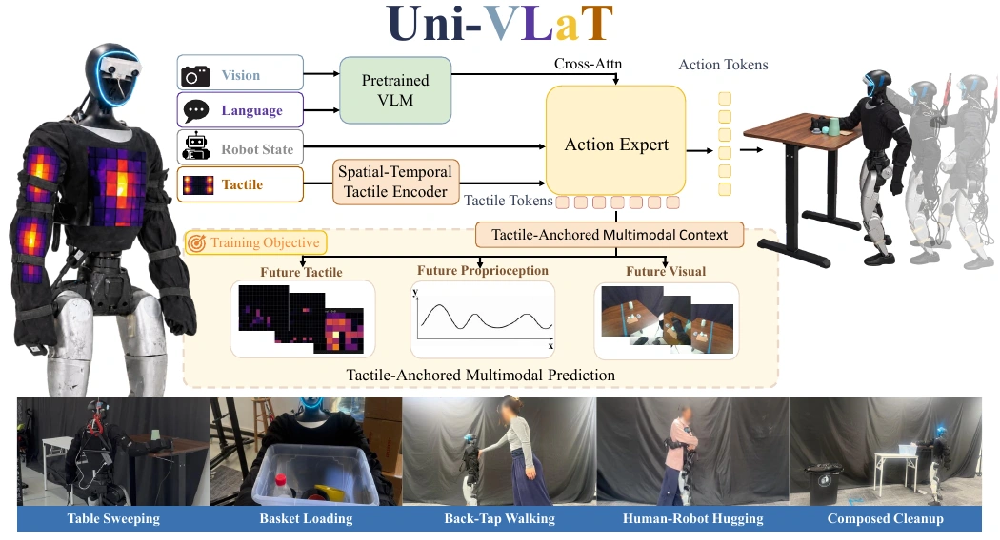

Uni-VLaT: Whole-Body Tactile Adaptation of VLA Policies for Humanoid Loco-Manipulation
Under review at IEEE ICRA 2027
Adapting pretrained VLA policies with whole-body tactile sensing and tactile-anchored multimodal prediction for contact-rich humanoid control. Achieves 75% average success across five real-robot tasks.